THERE'S SOMETHING ADDICTIVE about deer hunting. The sport may not appeal to everyone, but those of us who are susceptible to its lure can feel the hooks pulling from deep within. Perhaps no other form of outdoor activity is as inextricably entangled in our history, myth, and language. Consider that the term venison, for the meat of the deer, is derived from the name of Venus, the Roman goddess of love. Other English terms sharing the same derivation are venerate ("to regard with reverential respect or with admiring deference"), venery (which means both "the art of hunting" and "the pursuit of sexual pleasure"), and venial ("meriting no particular censure"). Not to mention good old venereal, which, I suppose, needs no introduction. (Sounds like the stuff of a graduate-school thesis, "Buck Fever; Venereal Disease?")
At any rate, many men and women, after some degree or another of exposure to rural life, decide that the time has come for them to take a crack at deer hunting. Perhaps the motivating factor is a dinner of venison chops at a neighbor's house; maybe it has a more negative genesis that follows watching Bambi and family mow their way through the vegetable garden. Regardless of the reason for the urge, the novice nimrod is likely to find that game-meat gurus are hard to come by. Thus the reasoning behind our presenting this article.
I can't teach you everything you'll need to know when hunting deer, though a few read ers will most likely absorb the following pages and go out to score a good buck on opening day (those doing so will earn my envy and, probably, that of their closest friends, but drop me a line anyway should you be the one to strike it rich). Most, though, will go on to look for an experienced friend, relative, neighbor, or coworker to augment (and undoubtedly at times contradict) the information presented here. What I hope to do is cover enough essentials to keep you from sounding like a bozo when you ask for that advice, to spell out enough parameters to allow you to judge whether the advisor in question is someone you really want to hunt with, and maybe even to ask you to look at your own motivation for deer hunting, and decide whether you really should be out in the woods.
In fact, let's start right there.
I wonder just how many would-be deerstalkers actually believe that the sport is a shortcut to a ready supply of low-cost protein. I suspect that the rationale is more commonly used to justify the purchase of a new rifle, a bow, or any one of the innumerable pieces of paraphernalia that every nimrod "must have" at one time or another. At the risk of ruining a perfectly good rationalization, let me set the record straight. If your only reason to take up hunting really is to obtain a supply of lowcost, chemical-free, lowfat meat, don't buy a rifle. Instead, buy a beef calf, feed him for a season or three, and butcher him yourself. I mean, it is possible to find a low-cost, used rifle or bow, throw on your gardening clothes, and bag a hundred pounds or so of venison, but it doesn't happen often. More common is the deer hunter who, after decades of pursuing his game-sometimes successfully, sometimes not-may reach the point of amortization at which his venison nears the cost of beef-but only beef as served in the better restaurants of New York, Chicago, Kansas City, or L.A.
Don't get me wrong. Venison, if properly cared for, is delicious and healthful. Furthermore, the meat of a wild deer can't be duplicated, even by the ranch-raised venison served in the aforementioned eateries. It takes additional savor, too, from your pride at having supplied it and from the memories that help to season it. Its unique flavor should be just one of the reasons you drag yourself out of bed before dawn to stumble through the dark and climb a tree. The cost of the meat should have nothing to do with it. Remember, venison is priceless, but it sure as hell ain't generally cheap.
On the other hand, anyone who'd consider killing a deer for its trophy antlers and then make no provision for the care and transport of the meat simply doesn't belong in the wilds. There are names for such hunters, and "sportsman" doesn't figure among them.
With that negative baggage safely stowed away, let's proceed to the (ahem) meat of this discussion. If you're fortunate enough to live in the country, you may well have no concern about where to hunt, as you'll have spent a good bit of out-of-season time watching deer munch your sweet corn, fraternize with the goats, and generally make themselves at home around the place. Even if your resident animals aren't all that ubiquitous, a few walks in the woods (check areas of brush and trees adjacent to farm crops in the summer, wooded areas containing oak, apple, or beech trees in the fall) should turn up sign in the form of tracks (Fig. 1) or droppings (Fig. 2) or both, if deer are in the area. Should you be afield during the fall rut, you may also no tice scrapes-areas where randy bucks have bared a few square feet of the forest floor with their hooves and, often, rubbed the bark from an overhanging branch with their horns and foreheads. These serve notice to does in heat that the resident buck is ready to be, if you'll pardon the expression, at their service.
Of course, if your country home is still a gleam in your eye, you'll have to do a bit more work to find some venison on the hoof. If you have friends who farm, or whose work requires a lot of travel down rural roads, ask their advice. Then, if this research turns up a hotbed of bucks on private land, visit the property owner (it might be polite to phone first) to ask permission to hunt. Let him or her know you'll carefully avoid any livestock areas and will be sure to close gates as you pass through them. It might help to offer a portion of any deer you take, and should you be hunting with archery gear (which is perceived as presenting less of a threat), be sure to make mention of the fact.
Should your search for private hunting land fail to pan out, don't despair. Many, many good deer are taken from public hunting lands because of, rather than in spite of, the amount of hunting pressure these areas receive. (Deer move more when more people are in the woods, and moving deer are easier to spot than still ones!) Perhaps the best way to begin checking out your options here is with a call to the local office of the U.S. Fish and Wildlife Service or of your state Wildlife Resources Commission. Let whoever answers know that you're a first-time deerstalker and want help in selecting hunting areas in your county and one or two of those adjoining. You'll be passed on to the appropriate individual (in many states this will be the terrestrial wildlife biologist).
Once you've narrowed your choices down to one or two areas, visit a hunting or camping shop that carries topographic quadrangle maps for your region, and purchase those that cover your planned hunting ground. (Do not venture far into any wilderness area without a map and a compass that you know how to use!) If you're beginning early to plan next year's hunt (the best bet at this late date), use the winter, spring, and summer ahead to do some scouting. Wear blaze orange if any of the various hunting seasons are open, but get out into the woods and note deer sign, water and food availability, and topograph ic features that might favor deer (which, if given the choice, will always choose the easiest path between two points, especially if the route is uphill). You might even go so far as to note concentrations of sign and the locations, dates, and times of deer sightings on your map (Fig. 3). A few months of such outings-which can be disguised as fishing trips, picnics, birding walks, and such-will have you entering the woods next fall with a good step up on the vast majority of deer hunters.
Of course, you're probably eager to get in a little hunting this year. If so, use the topo map to spot the same sort of features that you'd be looking for while scouting: streams or ponds, meadows or fields, draws between steep ridges, and so forth. You may not find deer concentrations right away, but you'll definitely be learning while you're looking.
ANYONE WHO'D HUNT WITHOUT CONCERN FOR THE MEAT DOESN'T BELONG IN THE WILDS
Do yourself, your fellow hunters, and the game a favor; if you don't know whether you'll be using a rifle or bow, and if you don't know specifically which rifle or bow you'll be using, wait until next year to actually hunt. Familiarity and proficiency with the weapon are the most essential, and probably the most neglected, requirements for safe, successful, and ethical hunting. The deer will still be there next year. Choose your gun or bow now, use it regularly in the months to come (with the same arrows or ammunition you plan to use when hunting), and you'll be ready for your prey. Beyond stating that rule, I'll have little to say about just what you should choose. After all, your comfort with and confidence in the tool will make a lot more difference than action style, draw weight, caliber, and so forth when it comes time to let fly at a deer.
In general, though, rifles should be limited to .243 caliber and larger, and bows to no less than 45-pound-pull. Black-powder firearms should be no less than .45 caliber. If your state limits firearm hunting to shotguns, I'd be tempted to recommend one of the specialized 12-gauge "slug" guns with a rifled barrel, loaded with modem "sabot"-type slugs. This setup won't allow the versatility of a smooth bore (which will handle shotfilled bird loads better), but it will give greater range and accuracy in the deer woods. Again, though, choose what you will (of 20 gauge or larger), but take the time to get good with it before you fire at living meat.
Shoot from various positions. Sight in your firearm from a bench, then practice shooting offhand, seated, prone, resting against a tree-in short, any way that you might be forced to shoot when taking aim at a deer. The same applies to archery. Practice from a kneeling position, from your garage roof, and so on (Fig. 4).
Then, whether you hunt with rifle, shotgun, muzzle-loader, or bow, do not take a shot at game at any range in which you haven't consistently placed bullets or arrows within a six-inch circle in practice. For most bowhunters, this puts the outer limit within 30 yards (or less). Many black-powder shooters may want to hold themselves to 60 to 80 yards, shotgun slugsters to 60 or less. Riflemen or -women using iron sights will probably want to avoid shots beyond 100 yards, while those using scopes can probably shoot out to at least 150 yards. (And yes, I know many of these distances seem conservative. If you're sure you can hit consistently at greater range, go for it, but don't fool yourself on the basis of a few practice hits. You should be able to fire from the distance in question and place one bullet or arrow after another into an area approximating the heartlung area of a deerthat six-inch-diameter circle mentioned above.)
LEARN TO SIT QUITELY AND PAY ATTENTION, AND YOU WILL GET THE DEER.
So now you've located a well-populated piece of deer woods and honed your shooting skills until just thinking seems to send the bullets or arrows into the target. Just what do you do to put yourself within range of an animal? First off, I'm going to assume you're hunting white-tailed deer, since many more hunters pursue them each year than take off after mule deer (would-be muley hunters will find specific tips in the accompanying sidebar by Western Editor David Petersen).
Second, I'm going to assume that you are indeed a novice at the art of venery. With those two givens, your best hunting method will be to sit down and stay put. That is, set up a tree stand (Fig. 5) or simply park yourself against a big trunk with the wind in your face, looking over an area through which your scouting tells you deer regularly travel. Then wait. Sit still and wait. If you have to swat a mosquito, do it in slow motion. If reading a book helps you keep still, do so, but keep it down between your knees so the pages can be turned out of sight of that deer you can't see yet.
And really, that's nearly all there is to it. Oh, you can increase your "invisibility" in a number of ways. Full-camouflage clothing and makeup is all but essential if you hope to get the close-range shots called for in bowhunting. The same gear can be a real boon to the gunner, too, but check your state's laws concerning the wearing of blaze orange, and at the least wear orange-based camouflage during rifle season. No deer is worth taking the risk of making yourself a target for a careless hunter.
It's possible to hide your smell as well. There are any number of cover-up or attractant s cents on the market. Many of them probably do work, as long as the hunter and his or her clothing are relatively odor-free in the first place! I suggest washing your hunting clothes with baking soda, then storing them in a plastic bag-along with the foliage of a local evergreen or other aromatic plant until you're ready to hunt. Wash yourself with baking soda on the morning of your outing, too, and don't eat particularly odorous foods (bacon, for instance) or stop to fill the gas tank on your way to the woods. Then even if you are using an attracting scent, I'd still advise devoting at least half of your attention (I'd personally devote 90% of it) to the area upwind of your stand.
When it comes time to take a shot, take your time. Remember, too, that most hunters, even very experienced ones, have no business trying a shot at a running animal. All too often doing so results in a wounded deer that is never recovered. Wait for a shot that you're sure you can make, then go for the high-percentage heart-lung area (Fig. 6). Of course, you won't get perfect standing broadside chances all that often, so bear in mind that if the animal is facing at an angle away from you, the usual rule is to shoot through the deer toward the opposite shoulder (Fig. 7). Once you fire, if the animal drops immediately, reload, and cover it as you approach so you'll be ready for a finishing shot on a stunned or otherwise wounded deer. If the animal runs off, wait for a half hour or so, then thoroughly search the area where it was standing for blood, cut hair, or other signs of a hit. The scope of this article doesn't allow for detailed instructions on tracking game, but if the deer is hit, you are morally obligated to do everything you can to follow the tracks and blood trail and either find the animal dead or find it alive and finish the job.
In most cases, people who claim that venison tastes too strong or gamy to be palatable are people who've eaten only meat that was poorly cared for on the way to the table. In fact, though a big buck in the heat of the rut may have a "wilder" flavor than a young, unaroused buck or doe, I fondly remember an old gray-muzzled, swollen-necked hat rack that yielded some of the most delicious chops I've ever chomped down on! The trick is to cool the meat quickly by field-dressing the animal right where it falls.
After affixing your tag, if local laws demand it, the first step (Fig. 8) is to seal off the vent so that feces can't escape. Use a sharp, thinbladed knife to "core" around the anal opening so that you can grasp and pull it out far enough to tie it off with string. Next, cut around the sex organs and remove them (Fig.9), using shallow cuts to avoid piercing the bladder or intestines; try not to actually cut into the body cavity.
Now start just ahead of the rectum and draw your knife foreword, slicing carefully with the blade rather than stabbing with the tip. When the opening is long enough to al low the intestines to begin to bulge out, insert your free hand and push the entrails in and away from the cut, then reinsert the knife, edge up, into the opening just ahead of your hand (Fig. 10). Cut slowly, using your hand to hold the viscera away from the knife to prevent puncturing the intestines. Stop the cut when you reach the base of the breastbone (sternum).
With that done, locate the bladder, cut around it until it's loose, and attempt to remove it without spilling the contents on the meat (Fig. 11). Then pull the tied-off rectum through from the inside, carefully cutting away any remaining tissue holding it in place. Roll the animal to one side, and cut loose any tissue anchoring the entrails to the side of the abdominal wall, then roll the carcass the other way, and repeat the procedure on the far side. Sever the gullet (esophagus) just ahead of the stomach, and use both hands to work the innards out onto the ground (Fig. 12). To save the liver, let it cool, and then place it in a plastic bag.
Next, cut through the diaphragm separating the chest from the abdominal cavity, reach up into the chest as far as you can, and sever both the gullet and windpipe (Fig. 13). The two tubes should now be able to be pulled free along with the heart and lungs. If you plan to eat the heart, place it in the bag with the liver, and roll the carcass over to dump out any blood that might have accumulated.
Depending upon your personal strength, the size of you deer, and the distance and terrain you have to cover to get to your vehicle, you'll most likely either carry or drag the animal out of the woods. Either way, cover its head with a blaze orange cloth in use you pase an unethical hunter who might take a snap shot at a bobbing car or antler. Once at the road, transport the deer in the back of your truck or in (Fig. 14), or wrapped in a tarp inside the truck (not ridding strapped to the hood of the vehicle where it can be wind blasted, bug splattered, engine heated, and exposed to the eyes of nonhumers who ought be offended by the sight). If your state requires that the kill be registered, proceed directly to the designated station (often a sporting-goods store), and go right from there to a meat processor that you've already determined handles wild game. (Should you plan to have the hide tanned or the head mounted, be sure to let the processor know when you drop the carcass off). With that done, you can head home to reward yourself with a shower (you'll need it!) before beginning to peruse your cookbooks for venison recipes-and, of course, starting the wonderful process of remembering the hunt just passed and daydreaming about those yet to come.
|
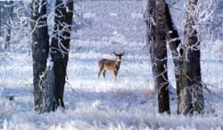 ALAN & SANDY CAREY |
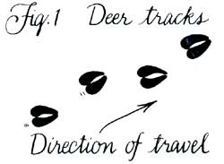 |
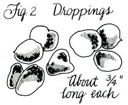 |
|
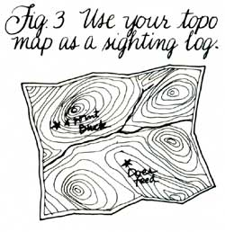 |
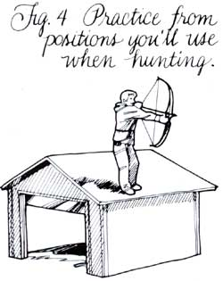 |
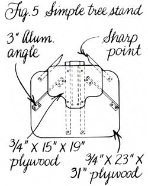 |
|
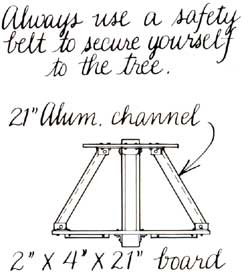 |
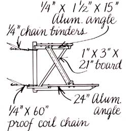 |
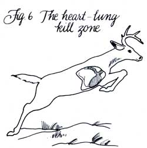 |
|
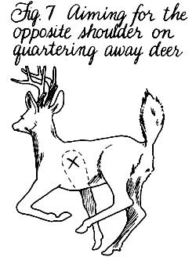 |
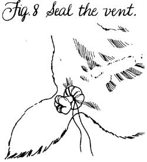 |
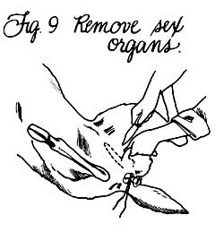 |
|
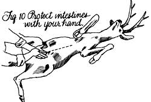 |
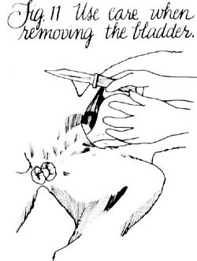 |
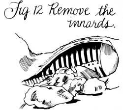 |
|
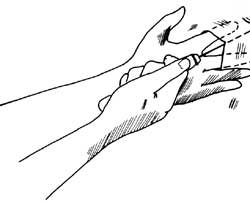 |
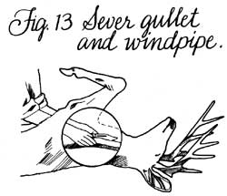 |
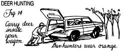 |